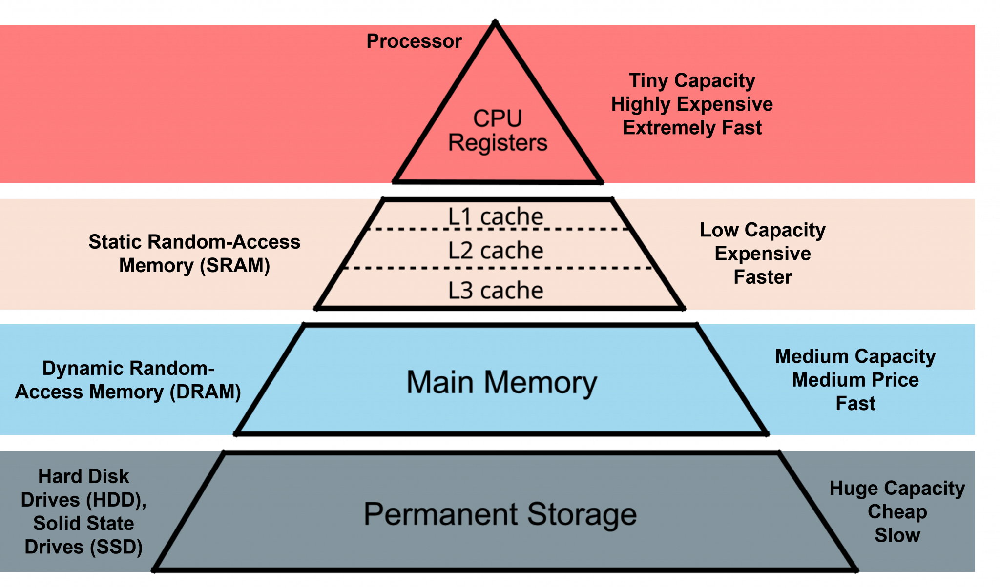

4000000048 bytesEL10: Biggish data
Examination
This lecture will not be examined. You are encouraged to experiment with the concepts in your project work if you find them useful, but this is not required.
Big data

Biggish data
Our focus:
- Only tabular data
- Original data might fit into physical RAM but …
- might be multiplied due to temporary necessity
- physical RAM might be constrained due to other processes/settings
- things might just take too much time … and life is short …

Reading large datasets
When working with large datasets, where the data is stored matters.
Network storage (e.g. shared drives)
- slower data transfer (limited bandwidth)
- higher latency (delay before data starts loading)
- multiple users may compete for resources
- repeated reads can be very inefficient
Local storage
- much faster read/write speeds
- low latency
- more stable and predictable performance
- better suited for iterative data analysis

Secure environment
In secure environments, both types of storage may look local, but they behave differently.
- “Local” disk (e.g. SSD on the server/VM)
- attached directly to the machine you are working on
- high bandwidth, low latency
- behaves like true local storage
- typically much faster for data analysis
- attached directly to the machine you are working on
- Mapped network folder
- accessed over the network (even if it looks like a normal folder)
- lower bandwidth and higher latency
- shared with other users
- slower, especially for repeated reads
- accessed over the network (even if it looks like a normal folder)
💡 Key difference:
Not where the data is stored, but how it is accessed (direct disk vs network).
💡 Practical advice:
Use “local” disk (SSD on the environment) for active analysis, and network storage for long-term storage.

Practical implication
For large datasets:
- avoid repeatedly reading data directly from network drives
- copy data locally when possible
fs::file_copy(path, new_path)- (“libuv provides a wide variety of cross-platform sync and async file system operations.”)
- obviously only if “local drive” is also in the (same) secure environment!
💡 Key message:
Data access can easily become the main bottleneck — not your code.

HDD (Hard Disk Drive)
- mechanical (spinning disks)
- slower, especially for random access
- typical speeds:
- ~50–150 MB/s (sequential read)
- larger capacity at lower cost
- often used in older systems or for backups
SSD (Solid State Drive)
- no moving parts
- much faster and more reliable
- typical speeds:
- ~500 MB/s (SATA SSD)
- ~2000–7000 MB/s (NVMe SSD)
- standard in most modern laptops
Typical sizes
- laptops: 256 GB – 1 TB SSD
- desktops / servers: 1–4 TB SSD + optional HDD storage
- network drives: often very large but slower
RAM and data analysis in R
When working in R, available RAM (memory) is often the main limiting factor.
- R can typically use most of the available RAM on your machine
- some memory is needed by:
- the operating system
- other applications
- a safe rule of thumb is to assume ~50–75% of total RAM is available for R
How large datasets can you work with?
- datasets must fit in memory (unless using special tools)
- but you also need memory for:
- intermediate objects
- copies created during transformations
- model objects
- many R operations create temporary copies of data
- memory usage can double or triple during processing
- running out of RAM leads to:
- slow performance
- crashes
Example
If you have:
Tip
Rule of thumb: you can usually work comfortably with data that is at most ~1/3 to 1/2 of your available RAM
- 16 GB RAM → usable ≈ 8–12 GB
→ practical dataset size ≈ 3–6 GB
- Modern R is 64-bit → can use large amounts of memory
- (32-bit R was limited to ~4 GB — mostly obsolete today)
Practical advice
- check memory:
ps::ps_system_memory() - avoid unnecessary copies of large objects
- Use
{data.table}for reference semantics - or Parquet files to read only the necessary data
- Use
- consider pipelines (
targets) or chunked processing
Numeric vs integer in R
R’s default numeric type is double precision (numeric).
Why this matters
- integers use less memory (4 bytes vs 8 bytes)
- can be important for large datasets
- 100 million values:
- numeric ≈ 800 MB
- integer ≈ 400 MB
- numeric ≈ 800 MB
In practice
- R often converts to numeric automatically
- some tools (e.g.
data.table) use integers efficiently- compare
as.IDate()vsas.Date()
- compare
- useful when working with:
- IDs
- categories
- counts
- IDs
💡 Key message:
Choosing the right data type can significantly reduce memory usage.
ALTREP (Alternative Representation)
R can represent some objects in a compact or lazy way.
- introduced in R 3.5.0
- avoids allocating full memory immediately
→ much smaller than expected
What happens?
- data is generated on demand
- not all values are stored in memory
💡 Key message:
Not all objects in R are fully materialised — some are computed when needed.
Other memory optimisations in R
R uses several mechanisms to reduce memory usage (not only ALTREP).
- Shared strings (string interning)
- identical strings may be stored only once
- reduces memory when many values are repeated
- identical strings may be stored only once
But memory still fills up…
Even with smart representations:
- many operations still create real objects
- temporary objects accumulate
👉 R still needs to free memory
Garbage collection
When you work in R, memory is constantly used for intermediate objects.
- many operations create temporary results
- these objects are no longer needed after a step is completed
- but R does not always remove them immediately
What is the problem?
- memory can fill up with objects that are no longer used
- there are no active references (“pointers”) to these objects
- but they still occupy memory
Solution: garbage collection
- R periodically identifies objects that are no longer reachable
- these are removed, and memory is freed
- GC is triggered when R needs more memory
- may cause short pauses during execution
Practical advice
💡 Key message:
You rarely need to manage memory explicitly — but inefficient code can still use too much of it.
Unnecassary computations for large objects
- Sometimes R (or the computer hardware) is not the problem, but the IDE might be.
- Common for RStudio (RSTudio and R both run in the same process)
- Memory problems might make RSTudio crash
- Positron separates the R process from the IDE
- Better, but still not perfect


CPU
The Central Processing Unit (CPU) determines how fast computations are performed.
- CPUs work in clock cycles (e.g. 3 GHz ≈ 3 billion cycles per second)
- CPU matters most when:
- running models (e.g. regression, mixed models)
- performing simulations
- using loops or inefficient code
- running models (e.g. regression, mixed models)
- CPU matters less when:
- reading data (disk/network bottleneck)
- working with very large objects (RAM bottleneck)
- reading data (disk/network bottleneck)
Note
Writing efficient code (vectorisation) often matters more than CPU speed!
How R uses the CPU
- R is often single-threaded
- many operations use only one core
- some libraries can use multiple cores (parallel computing)
How many cores do you have?
Vectorization in R
- R is designed to work efficiently with vectors, not loops.
- In R, what looks like a scalar is actually a vector of length 1
- vectorized operations apply to whole objects at once
- loops process one element at a time (often slower)
Why is vectorization faster?
Vectorized operations in R are usually implemented in compiled C code.
R code (e.g.
forloops) is interpreted → each step has overheadvectorized operations (e.g.
x + y) are:- implemented in C
- run as tight, optimized loops
- implemented in C
Parallel computing
Parallel computing means using multiple CPU cores at the same time.
- most R code runs on a single core
- your computer may have many cores (e.g. 4–16)
- a shared server such as TRE might have several hundreds!
Why use parallel computing?
- to speed up computationally intensive tasks
- especially when tasks can be done independently
💡 Key message:
Parallel computing allows you to do multiple computations at once — but only if the problem can be split.

Paralellization
- Some packages and functions may use multithreading by default
- But this is unusual
- Some functions might have arguments such as
nthreads,ncoresetc- You may want to use them
- To handle multicore/thread computations in general can be (very) difficult (I’ve heard)
Split-apply-combine
Parallel computing works best when:
- tasks are independent
- tasks are computationally heavy
- tasks can be repeated many times
Examples
- simulations
- bootstrapping
- cross-validation
- applying a function many times
💡 If tasks depend on each other, parallelisation will not help.
When parallel computing does NOT help
Parallel computing is often not the solution.
- reading data → bottleneck is disk/network
- large objects → bottleneck is RAM
- inefficient code → vectorization is better
Example in R
What happens?
- each core processes part of the work
- results are combined at the end
💡 More cores ≠ always faster
Limitations of parallel computing
- overhead (starting processes takes time)
- copying data between processes
- limited by number of cores
- not all functions are parallel-friendly
{mirai}
- Suposed to be up to 1,000 times “faster” compared to earlier methods
- (according to some metric …)
- should not block the main process while executing (haven’t tried)
Designed for simplicity, a ‘mirai’ evaluates an R expression asynchronously in a parallel process, locally or distributed over the network, with the result automatically available upon completion.

{purrr}
- Introduced
in_paralell()in 2025 - Based on mirai but without the specialised syntax
- Needs to be explicit on which objects/functions to export to each worker/daemon
mpg cyl disp hp drat wt qsec
20.090625 6.187500 230.721875 146.687500 3.596563 3.217250 17.848750
vs am gear carb
0.437500 0.406250 3.687500 2.812500 mpg cyl disp hp drat wt qsec
20.090625 6.187500 230.721875 146.687500 3.596563 3.217250 17.848750
vs am gear carb
0.437500 0.406250 3.687500 2.812500 {targets}
- The targets package does implement parallel processing efficiently (based on
{mirai}via{crew}) - covered in the R medecine workshop (see EL5)
Note
- Data must be copied for each paralell worker
- If all data is needed for each worker, it will be multiplied in memory
- This might not be possible for big data
- It also takes time
- Hence, there is no guarantee that the over all time will decrease
- Often a tradeof between no of workers/threads/deamons/cores and efficiency etc
- “Standard” computations in
{data.table}is optimized for single core - Message handling and progress bar etc is complicated
Profiling
- First version of R script might be inneficient
- Optimazation is difficult
- Might be suboptimal if made ad hoc
{profvis}visualise time and memory usage for each step- improve the most important step first
- For example change
{base}and{tidyverse}code to{data.table} - set keys
- Efficient handling of dates and strings
- For example change
- itterate
- Integrated in RStudio (but not yet Positron)

Modify packages
Modify packages
- Functions from packages might be inefficient
- Profile those as well
- Clone package from GitHub if available or download source code from CRAN
- Improve
- Just load the modified function in global environment
- might need to modify internal calls to
:::-accesed functions
- might need to modify internal calls to
- Or rebuild/install the package if more convenient
Notify maintainer
If you find ways to improve a package, the maintainer might be eager to hear! Suggest pull request or open GitHub issue!
C-code changes
- If the package use C-code it is probably already very fast
- If not, and you can fix it, the package must be re-compiled
- OS dependent
- Might be tricky if using restricted environments (TRE?)
- Can still be done by rhub (might need to change maintainer-e-mail temporarily)